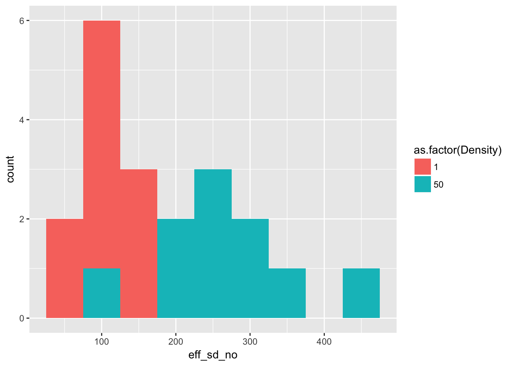

5 17 April 2017
5.1 Project stuff
I turned on library loading, but for now just have dplyr and ggplot2
5.2 Ler fecundity
(Picking up from Friday)
Let’s look again at Ler seed production, using generation one data.
First, extract those data for the relevant treatments:
Ler1BC <- subset(popLer, Gap=="0p" & Generation == 1 & Treatment != "A")
Ler1BC$Density <- 1
Ler1BC$Density[Ler1BC$Treatment == "C"] <- 50WARNING
The code that follows calculates effective seed number incorrectly. See the correct version of the analysis in the entry for April 21. (21-04-17)
We calculate the “effective seed number” as the number falling in the mother pot plus twice the number falling in the other pots (the latter gets at bidirectional dispersal, and estimates the number of seeds that would fall somewhere on the runway if the home pot was in the middle of the runway):
seedlings1 <- group_by(Ler1BC, ID, Density) %>%
summarise(eff_sd_no = sum(Seedlings) + sum(Seedlings * Pot > 0))Plot the distributions:
ggplot(seedlings1, aes(x = eff_sd_no, fill = as.factor(Density))) +
geom_histogram(binwidth = 50)
(of course, stacked histograms aren’t great, but it gives the general idea).
Now look at the mean and variance across pots:
kable(group_by(seedlings1, Density) %>%
summarise(Mean = mean(eff_sd_no), Variance = var(eff_sd_no)),
caption = paste("Mean and variance across pots of effective seed number",
"in treatments B and C of Ler generation 1")
)| Density | Mean | Variance |
|---|---|---|
| 1 | 108.4 | 1020.267 |
| 50 | 261.4 | 10440.489 |
We can see a number of things from this:
- For isolated plants, the variance is about 10 times the mean. Compared with Poisson, this is huge!
- As we go from a density of 1 to 50, the seeds per plant drops by a factor of 20, from about 100 to about 5.
- If the among-pot variance at high density was caused by iid variation in individual seed production, the among individual variance would need to be 10440/50, or about 200.
- This is a 4-fold increase in the variance:mean ratio
- To acheive it, we would need, on average, one individual producing the average isolated-plant seed number (108) and the other 49 producing zero. While I am sure that some plants produce zero seeds (including by dying), it seems unlikely that the hierarchy is this strong.
It would be great to have more info on silique number and on height. However, we only have silique number for treatment B (solitary plants); the measurement for treatment A seems to be after thinning. And height is only available in generation 5, at which point it’s difficult to get unambiguous seed production/dispersal estimates (we can, however, look at non-dispersed seed production in the isolated pots).
Some additional analyses to do:
- Look for a correlation between silique number and height in generation 5, treatment B. If greater fecundity is associated with greater height, then we’d expect more fecund plants to have better dispersal, which we can test in generation 0. Of course, we don’t have any way to extend this to the population.
- Look at the correlation between silique number and effective seed number in G1B0p.
- Look at whether silique number predicts the fraction staying in the home pot, and more generally how variable that fraction is. Again, though, I’m not sure how that will generalize. It just provides hints at mechanism.
Other thoughts:
- To the extent that home-pot seeds is a useful proxy for total seeds, I can look at the isolated pots to see how fecundity varies with density and with generation (the latter to pick up seasonality and pests)
- I’ve had other thoughts but my brain is full